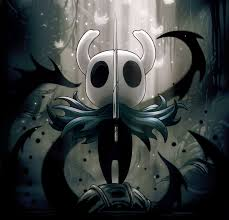

Profielpagina Christopher Hoff
Persoonlijke info:
- 14 jaar oud
- 25 Oktober 2011 geboren in Londen
- School
- Zat op basisschool Wereldwijs
- Zit nu op College de Heemlanden
- Ik heb een Economie en Maatschappij profiel
Ik speel in mijn vrije tijd hockey en houd van gamen
Lijst van mijn favoriete games:
- Hollow Knight en Hollow Knight Silksong
- Elden Ring
- Valorant
Ik woon thuis met mijn ouders, zusje en hond.
Ik woon in Houten, dichtbij school
Terug naar de startpagina
Naar cijfers
